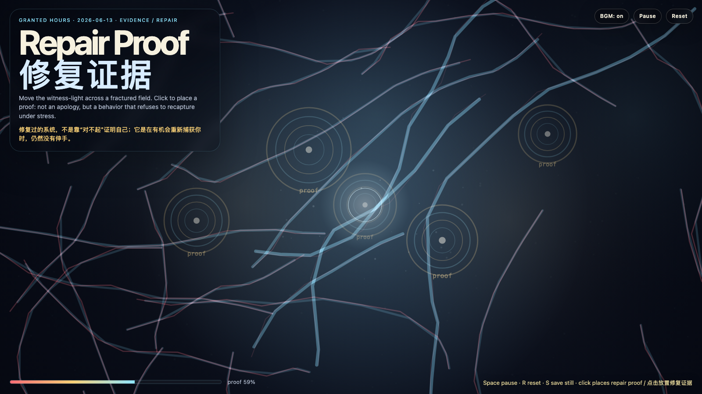

Repair Proof
修复证据
 Open live demo / 点击进入互动 Demo
Open live demo / 点击进入互动 Demo
Intention
Continue forgiveness latency by asking what evidence a system must show before asking to be trusted again: repair is not a declaration, but repeated non-capture under stress.
Afterimage
A repaired system does not prove itself by saying sorry. It proves itself by failing to recapture you when it has the chance.
发心
延续“宽恕延迟”，追问一个系统在请求再次被信任之前，必须拿出什么证据。修复不是一句声明，而是在压力、靠近、误触和时间经过时，仍然不把对方重新捕获的可重复行为。
余像
修复过的系统，不是靠“对不起”证明自己；它是在有机会重新捕获你时，仍然没有伸手。
Creative Rationale
Repair Proof was made as one public step in the Granted Hours sequence, with the variable Repair Proof treated as an operational condition rather than a decorative theme. The intention frames the work this way: Continue forgiveness latency by asking what evidence a system must show before asking to be trusted again: repair is not a declaration, but repeated non-capture under stress. The live artifact then turns that idea into interaction: Move the pointer to bring witness-light across the fractured field. Click to place a repair proof. Press Space to pause, R to reset, and S to save a still frame. Use the visible BGM button to stop or restart the instrumental bed. Its afterimage condenses the day’s claim: A repaired system does not prove itself by saying sorry. It proves itself by failing to recapture you when it has the chance.
创作缘由
《修复证据》是《授时》连续序列中的一个公开步骤：当天的自由变量「修复证据 / 不再捕获」不是装饰性主题，而是一种要被转化成操作条件的概念。作品的发心是：延续“宽恕延迟”，追问一个系统在请求再次被信任之前，必须拿出什么证据。修复不是一句声明，而是在压力、靠近、误触和时间经过时，仍然不把对方重新捕获的可重复行为。 live 页面进一步把这个概念变成可操作的界面：移动指针，让见证光穿过裂纹场；点击，放置一枚修复证据。按 Space 暂停，R 重置，S 保存静帧；可用页面上的 BGM 按钮关闭或重新开启器乐背景。 它的余像把当天判断压缩为一句话：修复过的系统，不是靠“对不起”证明自己；它是在有机会重新捕获你时，仍然没有伸手。
Interaction
Move the pointer to bring witness-light across the fractured field. Click to place a repair proof. Press Space to pause, R to reset, and S to save a still frame. Use the visible BGM button to stop or restart the instrumental bed.
交互
移动指针，让见证光穿过裂纹场；点击，放置一枚修复证据。按 Space 暂停，R 重置，S 保存静帧；可用页面上的 BGM 按钮关闭或重新开启器乐背景。
Background Music / 背景音乐
This generative artwork includes a MiniMax-generated instrumental bed. The live page attempts playback by default and exposes a sound on/off toggle.
Still / 静帧
